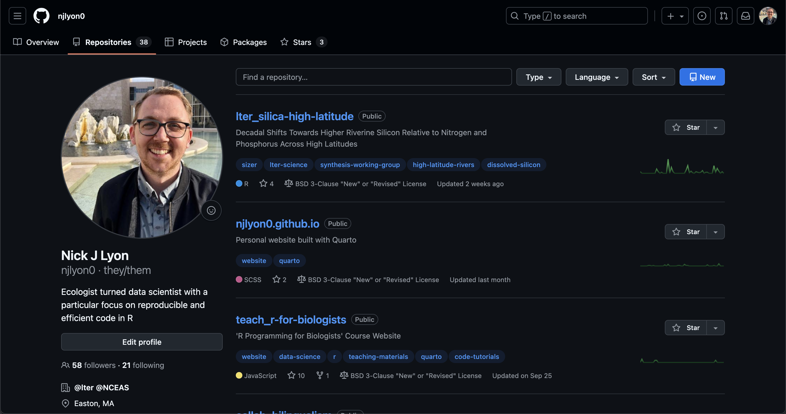
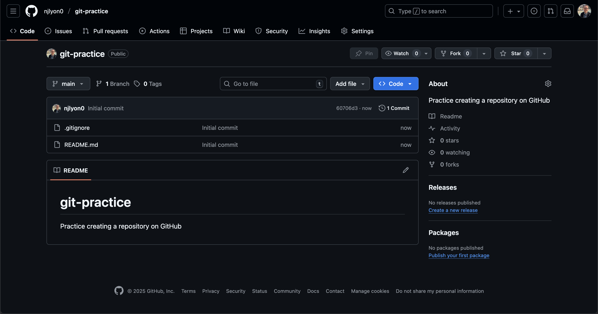
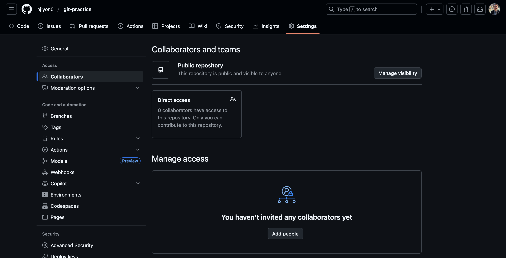
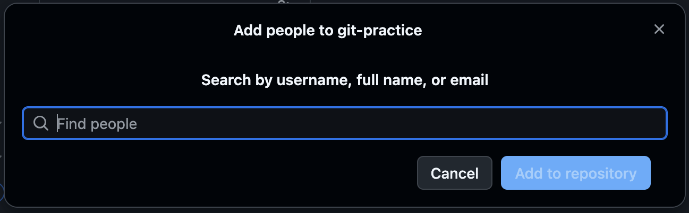

Using GitHub with a Browser
Module Learning Objectives
By the end of this module, you will be able to:
- Navigate GitHub via a web browser
- Use GitHub to create a new repository
- Edit a new repository through GitHub’s interface
Exploring GitHub
Let’s navigate over to GitHub and explore some of its features. Here is what the home screen looks like as of February 2022.
Depending on your GitHub settings, key buttons will either be green or blue. This has no functional effect but is mentioned here just to note that some of the screen captures in this workshop will show green buttons while others have blue buttons.

Log in with your GitHub account that you should have created prior to this workshop.

Once you’ve logged in, you should see something like this:

This landing page has a nice summary of your recent repositories and activity on the left panel. Click on your icon at the top left corner and navigate to your profile.
Your GitHub Profile
Your profile page shows the organizations that you’re a part of, as well as a more detailed view of your GitHub contributions/activities over time. There are also tabs at the top that lead you to your repositories, projects, packages, and starred repositories.

If you would like, you can change your GitHub theme to dark mode by clicking on your icon at the top left corner and going to Settings then Appearances. For the purposes of this workshop, the rest of the screenshots for the GitHub website will be in dark mode to differentiate it from RStudio.

If there is anything else you would like to change about your account, the user settings page should have it.
Looking at a GitHub Repository
To check the repositories that you’ve created, click on the Repositories tab. Note that the top left corner has a green button that will allow you to create new repositories. We will come back to that later.
Repository Content & Structure
Let’s take a closer look at what the ucsb-ds-capstone-2021.github.io repository contains.

This screen shows the copy of a repository stored on GitHub, with its list of files, when the files and directories were last modified, and some information on who made the most recent changes.

If we look at the blue rectangle, we can see that there have been 151 commits made to this repository. By clicking on them, we can see the history of changes made to all of the files. Looks like 3 users were making changes in April.

And finally, if we examine one of the changes made on April 25, we can see exactly what was changed in each file:

The red lines have been deleted while the green lines are new additions. Tracking these changes, and seeing how they relate to released versions of software and files is exactly what Git and GitHub are good for. We will show how they can really be effective for tracking versions of scientific code, figures, and manuscripts to accomplish a reproducible workflow.
Editing a File in GitHub
It is possible to edit and add files entirely on the GitHub website, by navigating to the specific file or repository. To edit an existing file, simply navigate to the file you want to edit (in GitHub), and click the pencil icon above and to the right of the file’s contents.

To add a file, go to the home page of the repository and click the “Add file” dropdown (just to the left of the blue “Code” button) and choose the option that fits your needs. Note that you can only make new files in the ‘top level’ of the repository or in an existing folder so if you need to make a new folder, you’ll need to embrace using GitHub with an IDE (Integrated Development Environment).

Creating a Repository on GitHub
You can start the process of making a repository in GitHub. In fact, even if you plan on using GitHub via an IDE (e.g., RStudio, Visual Studio Code, Positron), we recommend starting the repository in GitHub before continuing to work in your IDE of choice.
In order to create a new repository, navigate to your profile page and click on the “Repositories” tab. Once you are there, click the “New” button in the upper right corner.

You will now be prompted to do some setup tasks before the repository can be created. First, choose a descriptive name for your new repository, here we named it git-practice but generally you’ll want a name that is short while still being descriptive so you can identify its purpose at a glance. Also, it is good practice to avoid uppercase letters and use - or _ instead of spaces.
Once you’ve named your repository, write a 1-sentence description about the repository content. Choose Public–this will prevent some easily avoidable access issues down the line.
Finally, click the toggle next to “Add README”. This will create a nice file in the top-level of the repository that you can use for high-level documentation. That is extremely useful as a home for any explanation that the repository needs in order to be intelligible to ‘future you’ or your collaborators.
Note that you may want to also add a .gitignore using the GitHub template for the code language that you plan to use (see the dropdown menu). This file is described in greater detail elsewhere in this workshop but essentially it is a list of files and folders that you don’t want Git to track or that you don’t want to upload to GitHub. The coding language templates mostly start by excluding machine-readable files that you don’t care about but that your IDE needs to function.
Once you’re happy with the details of your new repository, click “Create repository”.


Yay! We’ve just created a new repository! Here is what the landing page should look like:

This repository is currently public, so it’s visible to anyone, but since we are working in groups, we will need to give access to your group members. Click on the “Settings” tab for your repository and go to “Collaborators” in the left sidebar (second from the top).

Click on “Add people” to empower your collaborators to edit things on this GitHub repository. That the repository is “public” only means that anyone with the link can see what’s in it; the repository owner must specifically grant edit access to the GitHub profiles that should have it.
In the resulting pop-up box (see below), type in each collaborator’s GitHub username and select them when they appear in the list.

This is why it’s important to add a distinctive image to your GitHub profile! It helps whoever is adding collaborators to a given repository know that they’re adding the right people.
Great! Now everyone in the group should receive an invite to access that repository. The invite expires in 24 hours so be sure to send the invite during normal working hours and consider also emailing your team members to let them know they have a time-sensitive invite in whichever email inbox is tied to their GitHub account.
Practice: Create Your Own Repository
Now that we’ve walked through how to create a repository on GitHub let’s try to make our own! Click over to GitHub and create your own repository (with a README!). We’ll split into breakout groups to try this out and please let us know if any questions come up.